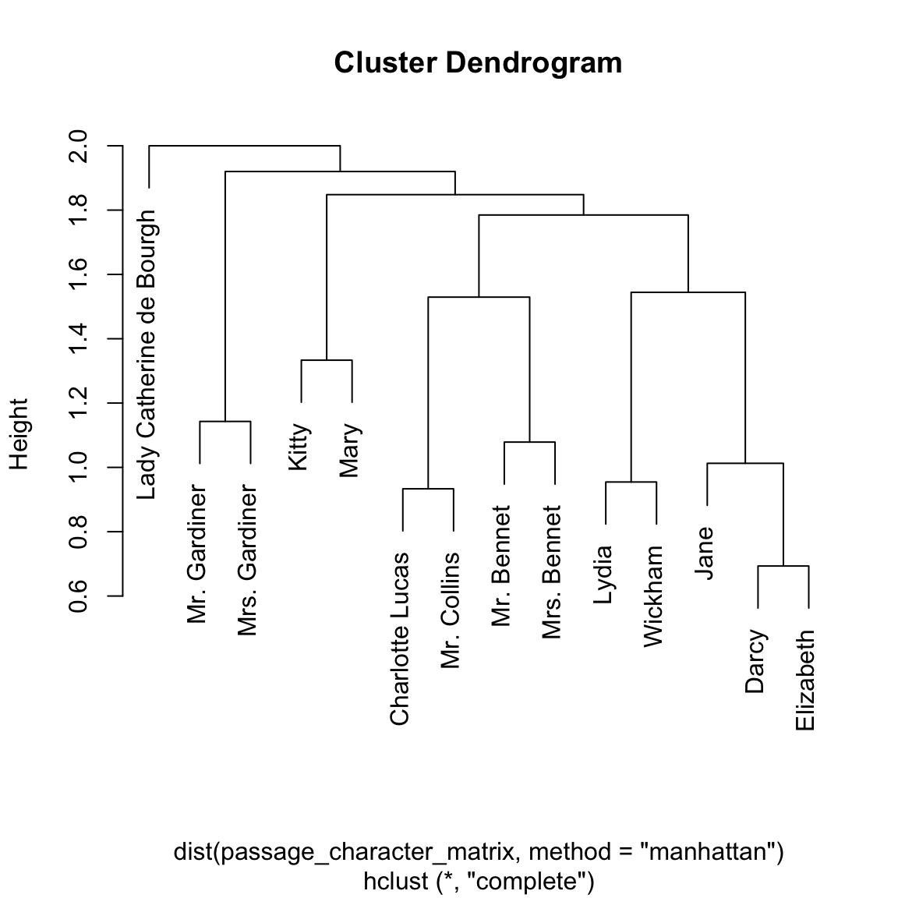

fuzzyjoin: Join data frames on inexact matching
The fuzzyjoin package is a variation on dplyr’s join operations that allows matching not just on values that match between columns, but on inexact matching. This allows matching on:
- Numeric values that are within some tolerance (
difference_inner_join) - Strings that are similiar in Levenshtein/cosine/Jaccard distance, or other metrics from the stringdist package (
stringdist_inner_join) - A regular expression in one column matching to another (
regex_inner_join) - Euclidean or Manhattan distance across multiple columns (
distance_inner_join) - Geographic distance based on longitude and latitude (
geo_inner_join) - Intervals of (start, end) that overlap (
interval_inner_join) - Genomic intervals, which include both a chromosome ID and (start, end) pairs, that overlap (
genome_inner_join)
One relevant use case is for classifying freeform text data (such as survey responses) against a finite set of options.
The package also includes:
- For each of
regex_,stringdist_,difference_,distance_,geo_, andinterval_, variations for the six dplyr “join” operations- for example,-
regex_inner_join(include only rows with matches in each) -
regex_left_join(include all rows of left table) -
regex_right_join(include all rows of right table) -
regex_full_join(include all rows in each table) -
regex_semi_join(filter left table for rows with matches) -
regex_anti_join(filter left table for rows without matches)
-
- A general wrapper (
fuzzy_join) that allows you to define your own custom fuzzy matching function. - The option to include the calculated distance as a column in your output, using the
distance_colargument
Installation
Install from CRAN with:
install.packages("fuzzyjoin")You can also install the development version from GitHub using devtools:
devtools::install_github("dgrtwo/fuzzyjoin")Example of stringdist_inner_join: Correcting misspellings against a dictionary
Often you find yourself with a set of words that you want to combine with a “dictionary”- it could be a literal dictionary (as in this case) or a domain-specific category system. But you want to allow for small differences in spelling or punctuation.
The fuzzyjoin package comes with a set of common misspellings (from Wikipedia):
library(dplyr)
library(fuzzyjoin)
data(misspellings)
misspellings
#> # A tibble: 4,505 x 2
#> misspelling correct
#> <chr> <chr>
#> 1 abandonned abandoned
#> 2 aberation aberration
#> 3 abilties abilities
#> 4 abilty ability
#> 5 abondon abandon
#> 6 abbout about
#> 7 abotu about
#> 8 abouta about a
#> 9 aboutit about it
#> 10 aboutthe about the
#> # ... with 4,495 more rows# use the dictionary of words from the qdapDictionaries package,
# which is based on the Nettalk corpus.
library(qdapDictionaries)
words <- tbl_df(DICTIONARY)
words
#> # A tibble: 20,137 x 2
#> word syllables
#> * <chr> <dbl>
#> 1 hm 1
#> 2 hmm 1
#> 3 hmmm 1
#> 4 hmph 1
#> 5 mmhmm 2
#> 6 mmhm 2
#> 7 mm 1
#> 8 mmm 1
#> 9 mmmm 1
#> 10 pff 1
#> # ... with 20,127 more rowsAs an example, we’ll pick 1000 of these words (you could try it on all of them though), and use stringdist_inner_join to join them against our dictionary.
set.seed(2016)
sub_misspellings <- misspellings %>%
sample_n(1000)joined <- sub_misspellings %>%
stringdist_inner_join(words, by = c(misspelling = "word"), max_dist = 1)By default, stringdist_inner_join uses optimal string alignment (Damerau–Levenshtein distance), and we’re setting a maximum distance of 1 for a join. Notice that they’ve been joined in cases where misspelling is close to (but not equal to) word:
joined
#> # A tibble: 728 x 4
#> misspelling correct word syllables
#> <chr> <chr> <chr> <dbl>
#> 1 sould should could 1
#> 2 sould should should 1
#> 3 sould should sold 1
#> 4 sould should soul 1
#> 5 sould should sound 1
#> 6 sould should would 1
#> 7 fiels feels field 1
#> 8 fiels feels fils 1
#> 9 conscent consent consent 2
#> 10 fleed freed bleed 1
#> # ... with 718 more rowsClassification accuracy
Note that there are some redundancies; words that could be multiple items in the dictionary. These end up with one row per “guess” in the output. How many words did we classify?
joined %>%
count(misspelling, correct)
#> # A tibble: 455 x 3
#> misspelling correct n
#> <chr> <chr> <int>
#> 1 abritrary arbitrary 1
#> 2 accademic academic 1
#> 3 accension ascension 2
#> 4 accessable accessible 1
#> 5 accidant accident 1
#> 6 accidentaly accidentally 1
#> 7 accordeon accordion 1
#> 8 addopt adopt 1
#> 9 addtional additional 1
#> 10 admendment amendment 1
#> # ... with 445 more rowsSo we found a match in the dictionary for about half of the misspellings. In how many of the ones we classified did we get at least one of our guesses right?
which_correct <- joined %>%
group_by(misspelling, correct) %>%
summarize(guesses = n(), one_correct = any(correct == word))
which_correct
#> # A tibble: 455 x 4
#> # Groups: misspelling [?]
#> misspelling correct guesses one_correct
#> <chr> <chr> <int> <lgl>
#> 1 abritrary arbitrary 1 TRUE
#> 2 accademic academic 1 TRUE
#> 3 accension ascension 2 TRUE
#> 4 accessable accessible 1 TRUE
#> 5 accidant accident 1 TRUE
#> 6 accidentaly accidentally 1 FALSE
#> 7 accordeon accordion 1 TRUE
#> 8 addopt adopt 1 TRUE
#> 9 addtional additional 1 TRUE
#> 10 admendment amendment 1 TRUE
#> # ... with 445 more rows
# percentage of guesses getting at least one right
mean(which_correct$one_correct)
#> [1] 0.8527473
# number uniquely correct (out of the original 1000)
sum(which_correct$guesses == 1 & which_correct$one_correct)
#> [1] 294Not bad.
Reporting distance in the joined output
If you wanted to include the distance as a column in your output, you can use the distance_col argument. For example, we may be interested in how many words were two letters apart.
joined_dists <- sub_misspellings %>%
stringdist_inner_join(words, by = c(misspelling = "word"), max_dist = 2,
distance_col = "distance")
joined_dists
#> # A tibble: 7,427 x 5
#> misspelling correct word syllables distance
#> <chr> <chr> <chr> <dbl> <dbl>
#> 1 charactors characters character 3 2
#> 2 charactors characters charactery 4 2
#> 3 sould should auld 1 2
#> 4 sould should bold 1 2
#> 5 sould should bound 1 2
#> 6 sould should cold 1 2
#> 7 sould should could 1 1
#> 8 sould should fold 1 2
#> 9 sould should foul 1 2
#> 10 sould should found 1 2
#> # ... with 7,417 more rowsNote the extra distance column, which in this case will always be less than or equal to 2. We could then pick the closest match for each, and examine how many of our closest matches were 1 or 2 away:
closest <- joined_dists %>%
group_by(misspelling) %>%
top_n(1, desc(distance)) %>%
ungroup()
closest
#> # A tibble: 1,437 x 5
#> misspelling correct word syllables distance
#> <chr> <chr> <chr> <dbl> <dbl>
#> 1 charactors characters character 3 2
#> 2 charactors characters charactery 4 2
#> 3 sould should could 1 1
#> 4 sould should should 1 1
#> 5 sould should sold 1 1
#> 6 sould should soul 1 1
#> 7 sould should sound 1 1
#> 8 sould should would 1 1
#> 9 incorportaed incorporated incorporate 4 2
#> 10 awya away aa 2 2
#> # ... with 1,427 more rows
closest %>%
count(distance)
#> # A tibble: 3 x 2
#> distance n
#> <dbl> <int>
#> 1 0 1
#> 2 1 725
#> 3 2 711Other joining functions
Note that stringdist_inner_join is not the only function we can use. If we’re interested in including the words that we couldn’t classify, we could have use stringdist_left_join:
left_joined <- sub_misspellings %>%
stringdist_left_join(words, by = c(misspelling = "word"), max_dist = 1)
left_joined
#> # A tibble: 1,273 x 4
#> misspelling correct word syllables
#> <chr> <chr> <chr> <dbl>
#> 1 charactors characters <NA> NA
#> 2 Brasillian Brazilian <NA> NA
#> 3 sould should could 1
#> 4 sould should should 1
#> 5 sould should sold 1
#> 6 sould should soul 1
#> 7 sould should sound 1
#> 8 sould should would 1
#> 9 belligerant belligerent <NA> NA
#> 10 incorportaed incorporated <NA> NA
#> # ... with 1,263 more rows
left_joined %>%
filter(is.na(word))
#> # A tibble: 545 x 4
#> misspelling correct word syllables
#> <chr> <chr> <chr> <dbl>
#> 1 charactors characters <NA> NA
#> 2 Brasillian Brazilian <NA> NA
#> 3 belligerant belligerent <NA> NA
#> 4 incorportaed incorporated <NA> NA
#> 5 awya away <NA> NA
#> 6 occuring occurring <NA> NA
#> 7 surveilence surveillance <NA> NA
#> 8 abondoned abandoned <NA> NA
#> 9 alledges alleges <NA> NA
#> 10 deliberatly deliberately <NA> NA
#> # ... with 535 more rows(To get just the ones without matches immediately, we could have used stringdist_anti_join). If we increase our distance threshold, we’ll increase the fraction with a correct guess, but also get more false positive guesses:
left_joined2 <- sub_misspellings %>%
stringdist_left_join(words, by = c(misspelling = "word"), max_dist = 2)
left_joined2
#> # A tibble: 7,691 x 4
#> misspelling correct word syllables
#> <chr> <chr> <chr> <dbl>
#> 1 charactors characters character 3
#> 2 charactors characters charactery 4
#> 3 Brasillian Brazilian <NA> NA
#> 4 sould should auld 1
#> 5 sould should bold 1
#> 6 sould should bound 1
#> 7 sould should cold 1
#> 8 sould should could 1
#> 9 sould should fold 1
#> 10 sould should foul 1
#> # ... with 7,681 more rows
left_joined2 %>%
filter(is.na(word))
#> # A tibble: 264 x 4
#> misspelling correct word syllables
#> <chr> <chr> <chr> <dbl>
#> 1 Brasillian Brazilian <NA> NA
#> 2 belligerant belligerent <NA> NA
#> 3 occuring occurring <NA> NA
#> 4 abondoned abandoned <NA> NA
#> 5 correponding corresponding <NA> NA
#> 6 archeaologist archaeologist <NA> NA
#> 7 emmediately immediately <NA> NA
#> 8 possessess possesses <NA> NA
#> 9 unahppy unhappy <NA> NA
#> 10 Guilio Giulio <NA> NA
#> # ... with 254 more rowsMost of the missing words here simply aren’t in our dictionary.
You can try other distance thresholds, other dictionaries, and other distance metrics (see [stringdist-metrics] for more). This function is especially useful on a domain-specific dataset, such as free-form survey input that is likely to be close to one of a handful of responses.
Example of regex_inner_join: Classifying text based on regular expressions
Consider the book Pride and Prejudice, by Jane Austen, which we can access through the janeaustenr package.
We could split the books up into “passages” of 50 lines each.
library(dplyr)
library(stringr)
library(janeaustenr)
passages <- data_frame(text = prideprejudice) %>%
group_by(passage = 1 + row_number() %/% 50) %>%
summarize(text = paste(text, collapse = " "))
passages
#> # A tibble: 261 x 2
#> passage
#> <dbl>
#> 1 1
#> 2 2
#> 3 3
#> 4 4
#> 5 5
#> 6 6
#> 7 7
#> 8 8
#> 9 9
#> 10 10
#> # ... with 251 more rows, and 1 more variables: text <chr>Suppose we wanted to divide the passages based on which character’s name is mentioned in each. Character’s names may differ in how they are presented, so we construct a regular expression for each and pair it with that character’s name.
characters <- readr::read_csv(
"character,character_regex
Elizabeth,Elizabeth
Darcy,Darcy
Mr. Bennet,Mr. Bennet
Mrs. Bennet,Mrs. Bennet
Jane,Jane
Mary,Mary
Lydia,Lydia
Kitty,Kitty
Wickham,Wickham
Mr. Collins,Collins
Lady Catherine de Bourgh,de Bourgh
Mr. Gardiner,Mr. Gardiner
Mrs. Gardiner,Mrs. Gardiner
Charlotte Lucas,(Charlotte|Lucas)
")Notice that for each character, we’ve defined a regular expression (sometimes allowing ambiguity, sometimes not) for detecting their name. Suppose we want to “classify” passages based on whether this regex is present.
With fuzzyjoin’s regex_inner_join function, we do:
character_passages <- passages %>%
regex_inner_join(characters, by = c(text = "character_regex"))This combines the two data frames based on cases where the passages$text column is matched by the characters$character_regex column. (Note that the dataset with the text column must always come first). This results in:
character_passages %>%
select(passage, character, text)
#> # A tibble: 1,126 x 3
#> passage character
#> <dbl> <chr>
#> 1 1 Mr. Bennet
#> 2 1 Jane
#> 3 2 Mr. Bennet
#> 4 2 Jane
#> 5 2 Lydia
#> 6 2 Charlotte Lucas
#> 7 3 Elizabeth
#> 8 3 Mr. Bennet
#> 9 3 Mrs. Bennet
#> 10 4 Mr. Bennet
#> # ... with 1,116 more rows, and 1 more variables: text <chr>This shows that Mr. Bennet’s name appears in passages 1, 2, 4, and 6, while Charlotte Lucas’s appears in 3. Notice that having fuzzy-joined the datasets, some passages will end up duplicated (those with multiple names in them), while it’s possible others will be missing entirely (those without names).
We could ask which characters are mentioned in the most passages:
character_passages %>%
count(character, sort = TRUE)
#> # A tibble: 14 x 2
#> character n
#> <chr> <int>
#> 1 Elizabeth 227
#> 2 Darcy 159
#> 3 Jane 134
#> 4 Mrs. Bennet 89
#> 5 Wickham 89
#> 6 Lydia 79
#> 7 Mr. Collins 75
#> 8 Charlotte Lucas 68
#> 9 Mr. Bennet 55
#> 10 Kitty 42
#> 11 Mrs. Gardiner 35
#> 12 Lady Catherine de Bourgh 25
#> 13 Mr. Gardiner 25
#> 14 Mary 24The data is also well suited to discover which characters appear in scenes together, and to cluster them to find groupings of characters (like in [this analysis]).
passage_character_matrix <- character_passages %>%
group_by(passage) %>%
filter(n() > 1) %>%
reshape2::acast(character ~ passage, fun.aggregate = length, fill = 0)
passage_character_matrix <- passage_character_matrix / rowSums(passage_character_matrix)
h <- hclust(dist(passage_character_matrix, method = "manhattan"))
plot(h)
Other options for further analysis of this fuzzy-joined dataset include doing sentiment analysis on text surrounding each character’s name, similar to Julia Silge’s analysis here.
Future Work
A few things I’d like to work on:
Shortcuts on string distance matching: If two strings are more than 1 character apart in length, the method is
osa, andmax_distis 1, you don’t even need to compare them.More examples: I’ve used this package in other powerful ways, but on proprietary data. I’m interested in ideas for use cases that can be provided as vignettes.
Code of Conduct
Please note that this project is released with a Contributor Code of Conduct. By participating in this project you agree to abide by its terms.